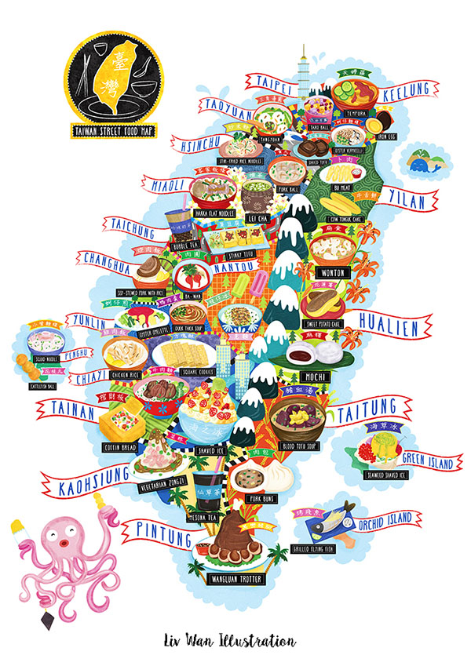
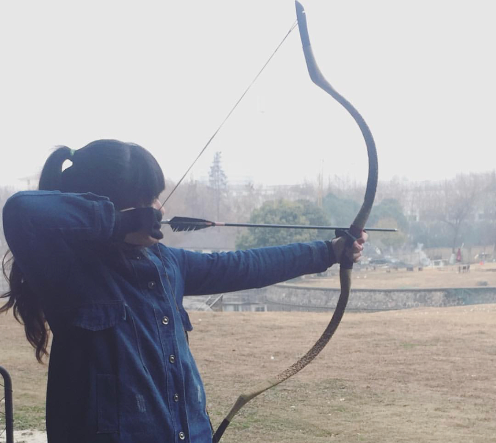
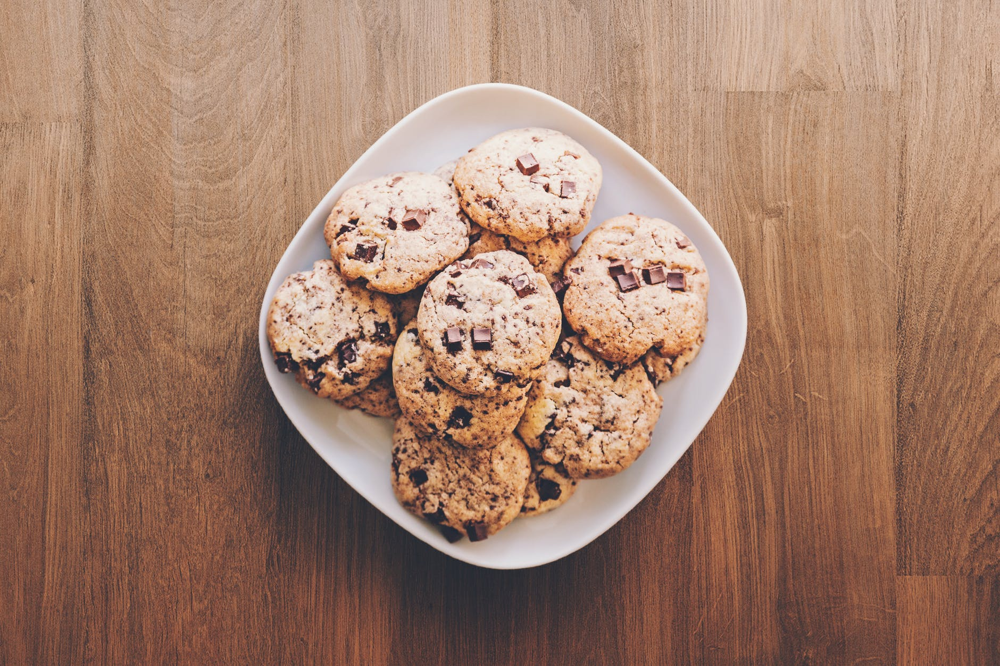
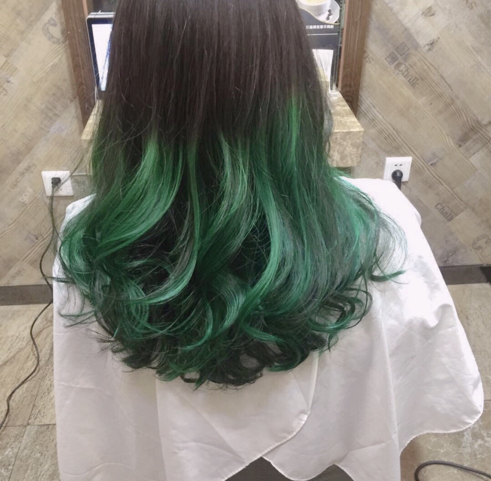

I'm a animal lover, and my favourite are dogs.
This is me and my dog.
Click here to see more photos of me and animals.
My home, Taiwan

I come from Taiwan. One of the things that I missed the most is our food and night markets. Photo credit to: https://livwanillustration.com/project/illustrated-maps/
Click here to see more things that represent me from my home.
My interest!

My favourite sport is archery. I have played it for six years. I use traditional Chinese bow.
Fooood

I love all kinds of desserts and snack, especially cookies. I have at least one cookie everyday.
Green!

My favourite color right now is green. That's why I dye my hair into green.